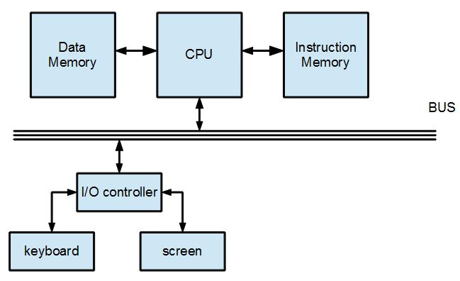
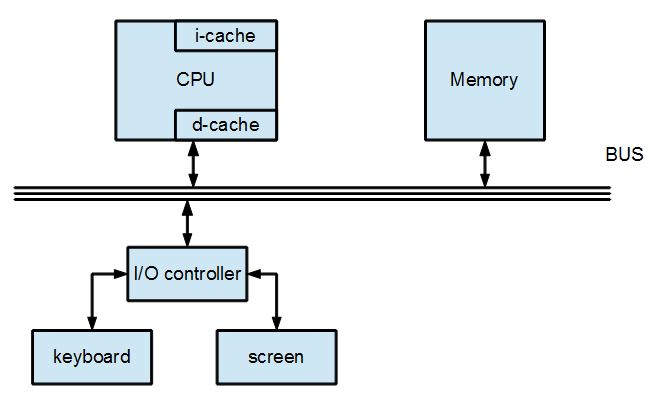

哈佛架構 (Harvard Architecture)
在「單一匯流排馮紐曼架構」之下，由於指令與資料放在同一個記憶體當中，而且只有一套匯流排，因此指令與資料勢必無法同時存取。
如果、我們希望同時進行指令與資料的存取，那麼就可以將指令與資料分別放在兩塊不同的記憶體當中，並且各用一套內部匯流排連接到 CPU，這樣就有可能同時存取「指令和資料」，也就有可能將「指令擷取」(instruction fetch) 與「資料存取」 (data access) 階段重疊執行了。

圖、指令與資料分開為兩套記憶體的哈佛架構
採用「指令與資料分開」的兩套記憶體模式，如果都是 DRAM 的話，那麼該處理器仍然會式非常緩慢的，因為受限於 DRAM 的速度限制，因此這種方式根本就是「花了兩倍力氣卻得不到太多好處」，可以說是一種很爛的設計。
但是、假如我們不是將主記憶體分為兩套，而是將 cache 分為「指令快取」 (i-cache) 與「資料快取」 (d-cache) 的「變種哈佛架構」話，那麼速度就真的是會變快了。

圖、採用兩套快取的單一匯流排哈佛架構
不過、其實還可以變得更快，只要我們能夠用「流水線的模式」，就能讓 CPU 快上五倍，這必須讓指令的每個階段都能重疊起來才行 (包含「指令擷取」與「資料存取」階段的重疊，這也正是為何要討論「哈佛架構」的原因)。